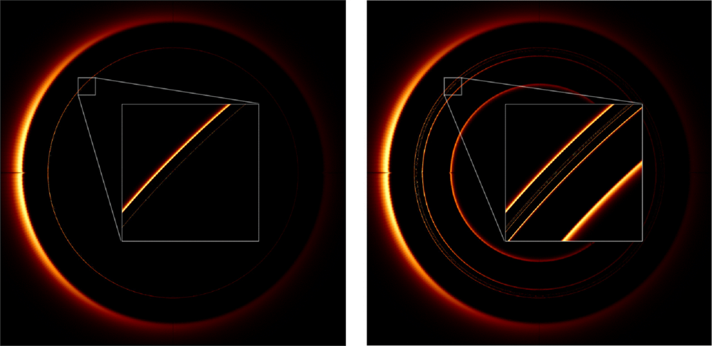
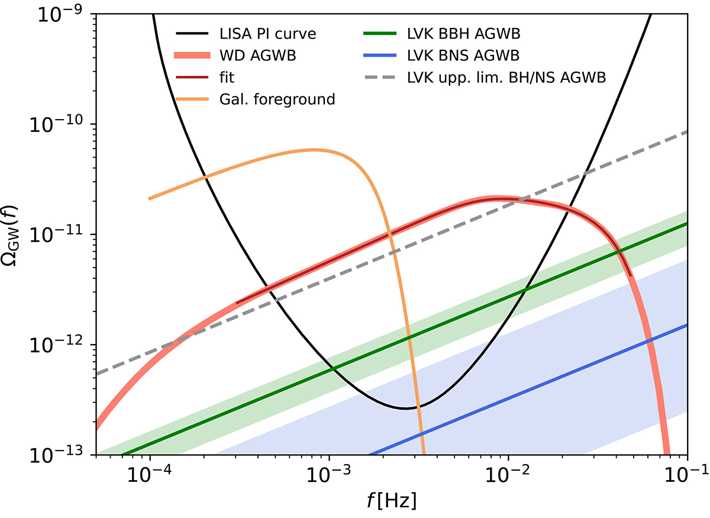
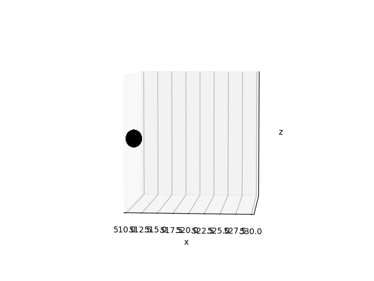

{kind=link}

Black hole vs. boson star
Comparison of ray-traced images of a Schwarzschild black hole and an ultracompact boson star. Figures made with FOORT, and used in our PRL paper.
PhD Student, University of Cambridge

Comparison of ray-traced images of a Schwarzschild black hole and an ultracompact boson star. Figures made with FOORT, and used in our PRL paper.

The main plot from our A&A paper, in which we argue that extragalactic white dwarf binaries will dominate the stochastic gravitational-wave background in the LISA band.
This section contains example animations resulting from NR simulations with GRChombo.
The below animations show a head-on collision of a black hole flying into a more massive boson star (the setup mimics IB in 2307.02548)

This shows the boson star as it gets devoured by the black hole.

This shows the black hole, prominently, and the boson star, less obvious.

This shows the black hole apparent horizon growing as it devours the boson star, while the black hole also slows down.
{kind=link}